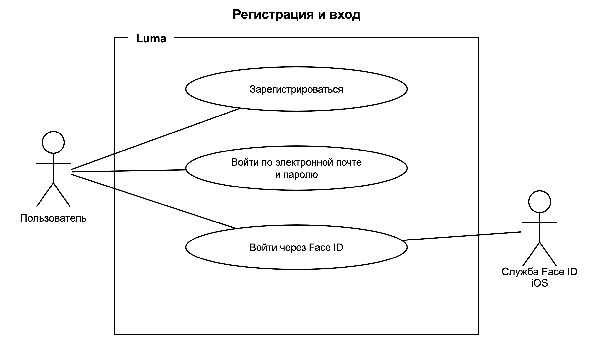
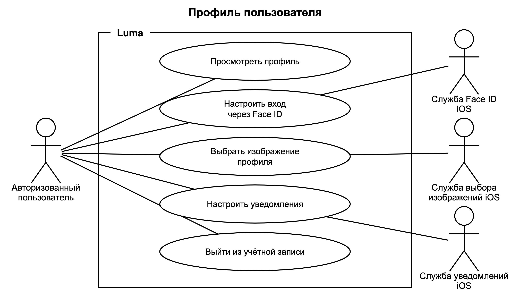
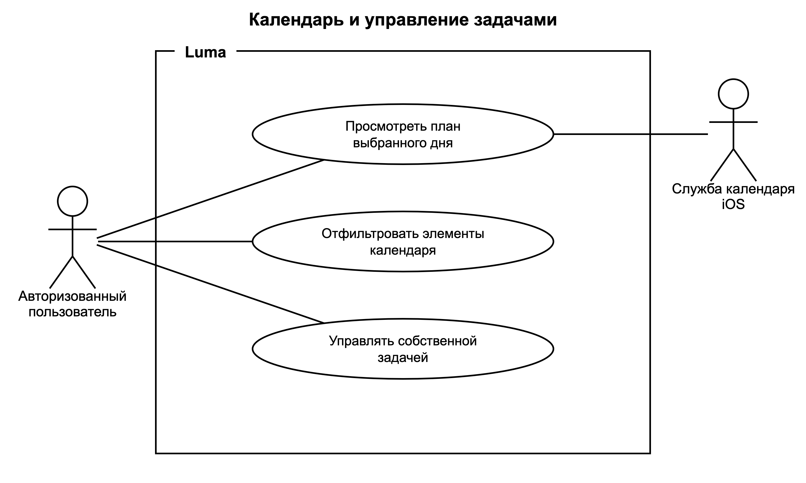
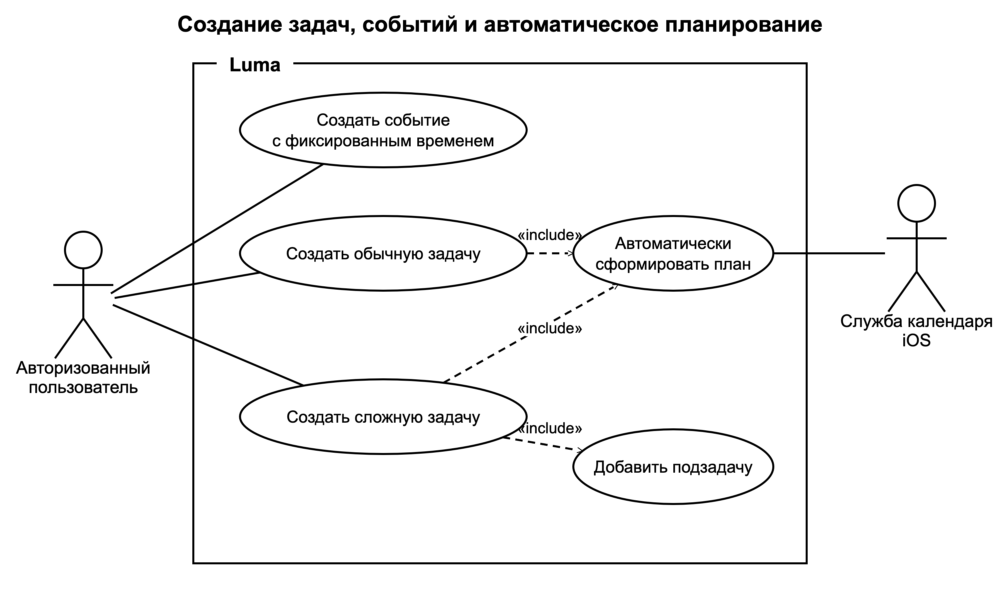
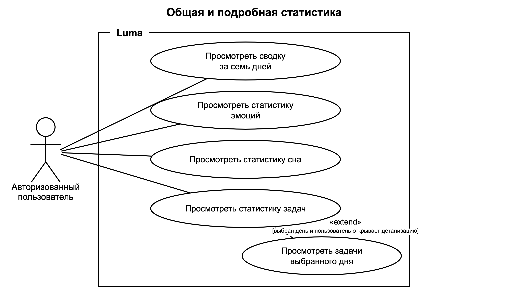
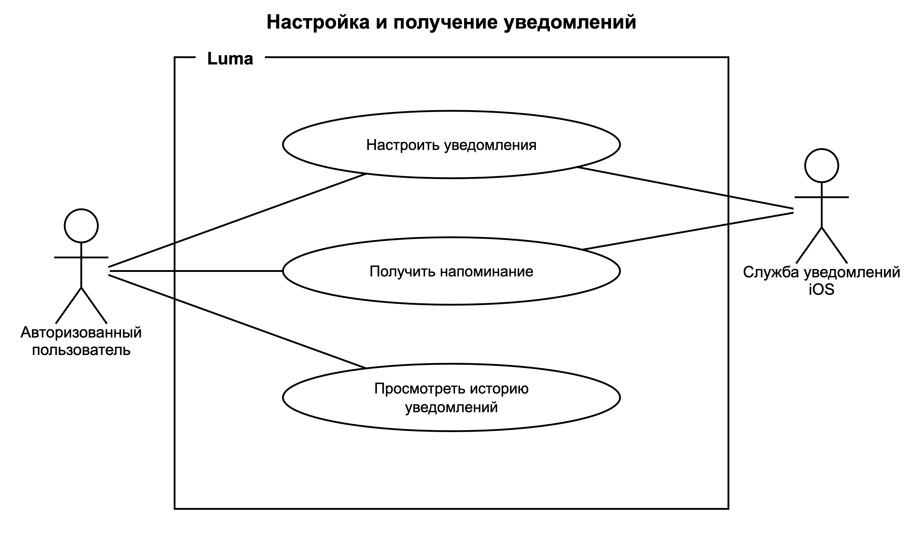
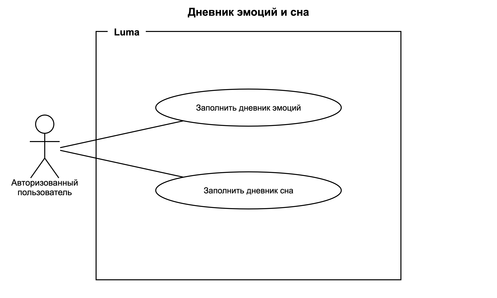
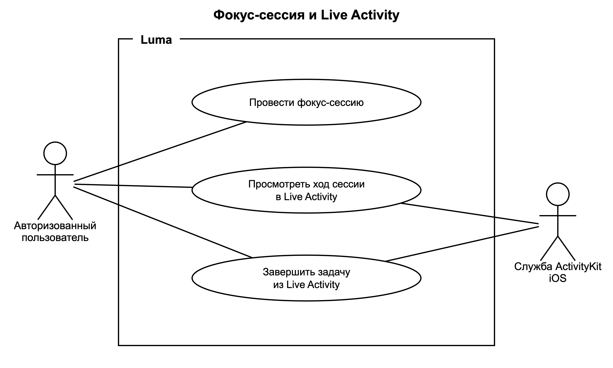
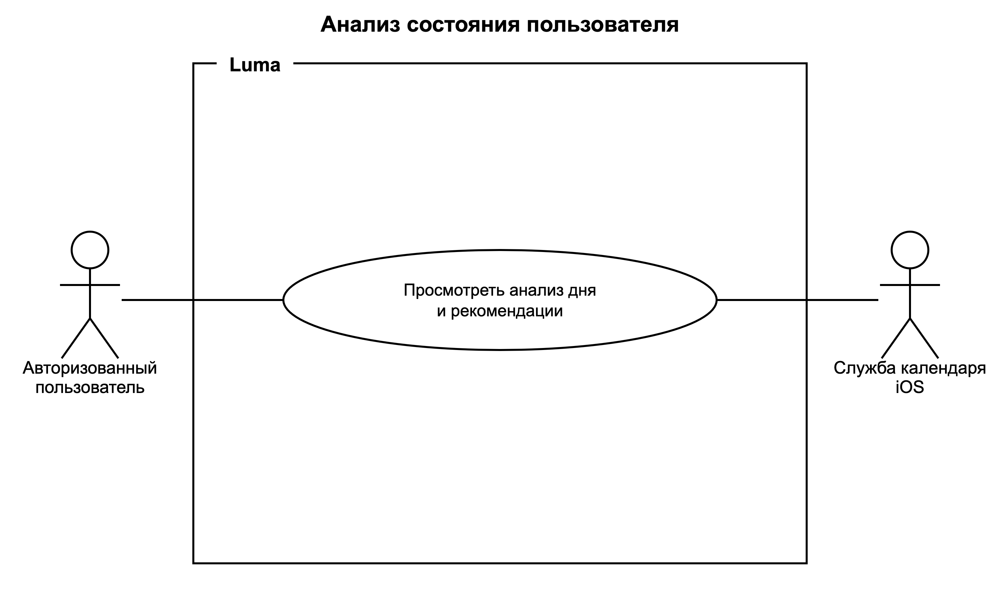
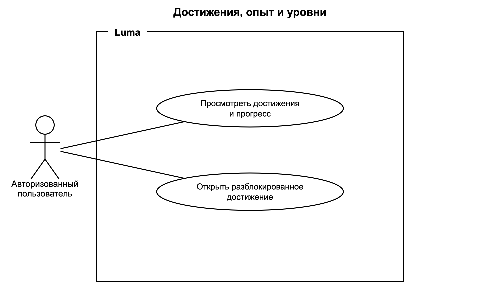

Luma — диаграммы вариантов использования

01. Регистрация и входFR-01.01–FR-01.04; FR-02.01–FR-02.02

02. Профиль пользователяFR-02.04–FR-02.08; FR-09.01

03. Календарь и управление задачамиFR-03.02–FR-03.08; FR-04.01–FR-04.03

04. Создание задач, событий и автоматическое планированиеFR-05.01–FR-05.10; FR-06.01–FR-06.07; FR-07.01–FR-07.09; FR-08.01–FR-08.04

05. Общая и подробная статистикаFR-13.01–FR-13.11

06. Настройка и получение уведомленийFR-09.01–FR-09.11

07. Дневник эмоций и снаFR-10.01–FR-10.11

08. Фокус-сессия и Live ActivityFR-11.01–FR-11.13

09. Анализ состояния пользователяFR-12.01–FR-12.11

10. Достижения, опыт и уровниFR-14.01–FR-14.10